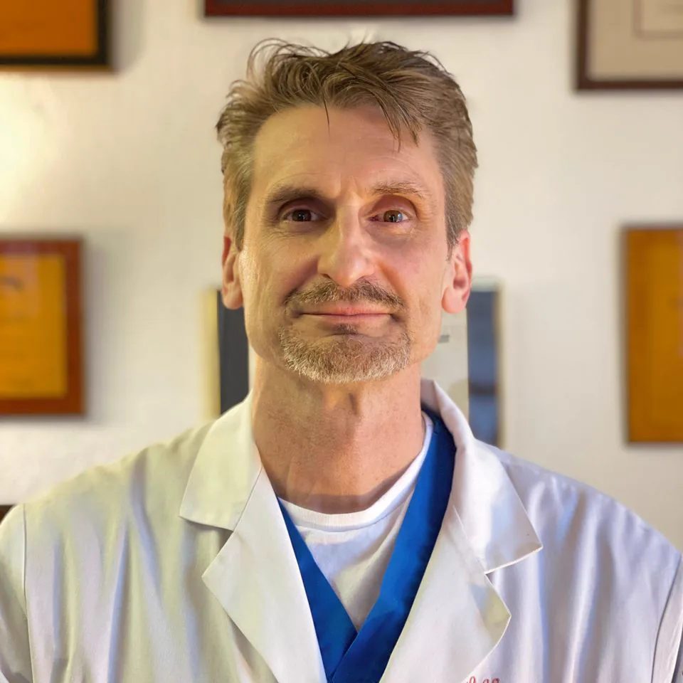
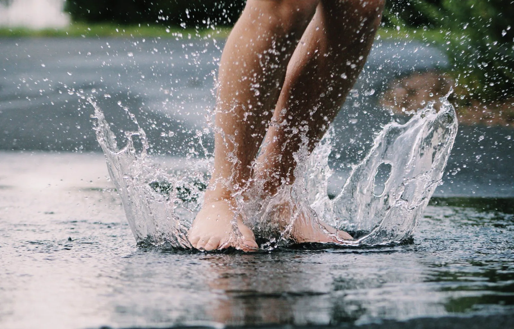
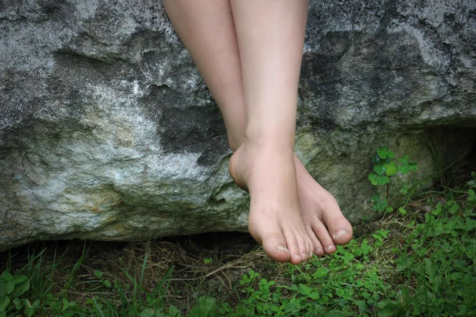

Bunions
Conservative care first, with surgery only when it has earned its place rather than offered as the opening move.
Dr. Lawrence Kassan, DPM is a board certified foot and ankle specialist with two office locations and convenient hours across Philadelphia.

Medical and surgical care of the foot and ankle.
Conservative care first, with surgery only when it has earned its place rather than offered as the opening move.
The complaint that gets people out of bed badly, treated properly instead of managed with another insert and a shrug.
Foot and ankle injuries with a return to activity plan attached, because rest alone is not a rehabilitation programme.
Toenail fungus and ingrown nails handled in office, usually in a single visit and usually far sooner than people book it.
Diabetic foot conditions monitored on a schedule, catching the small thing before it becomes the thing nobody can reverse.
Corns, calluses, stress fractures and hallux rigidus, diagnosed properly rather than assumed from the symptom.
As a Philadelphia podiatrist, Dr. Kassan specializes in medical and surgical care of the foot and ankle. With two office locations and convenient hours, we are able to see patients quickly and give them a means to understand their own condition. Feet get ignored longer than any other part of the body, mostly because people assume the pain is normal for their age or their job. It usually is not, and most of what comes through the door is straightforward once somebody looks at it.
The practice built this site to give patients a means of understanding what is happening to their feet before they ever sit in the chair. Board certified in foot and ankle, two locations, and hours arranged so that seeing somebody does not mean taking a day off work.


